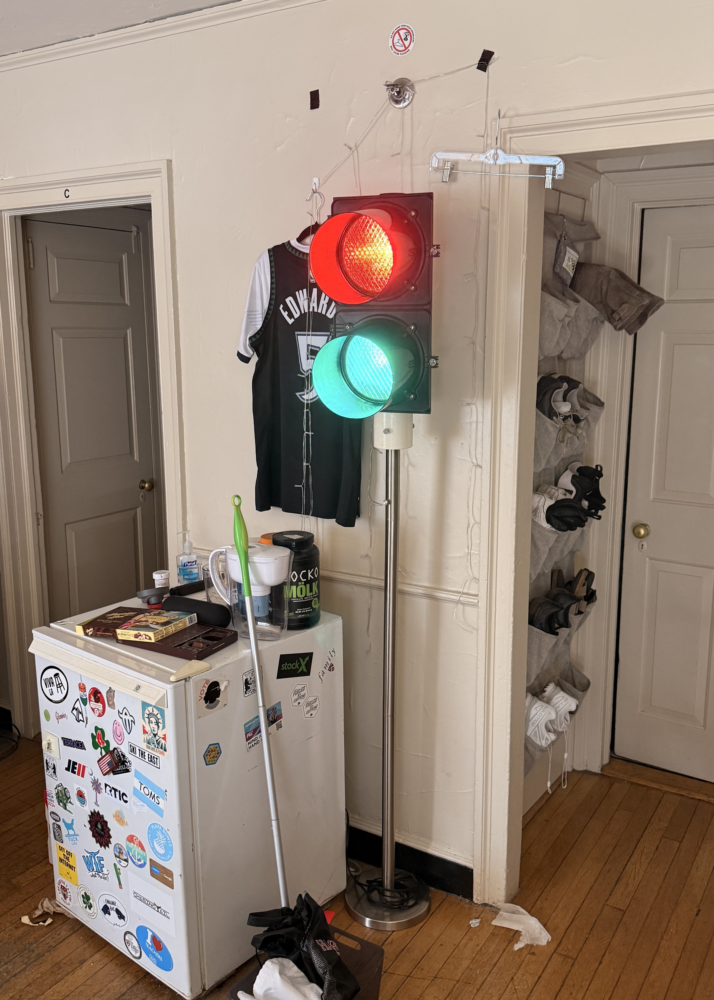

Modified standard lamp post to operate traffic lights.
In November, I was gifted two recycled traffic lights that were put out of commission; they only came in handy when I found two recycled lamps: one was broken in two pieces and the other had non-functional electronics. Upon closer inspection, I learned that conveniently the lamps produced 120v and the traffic lights needed 120v. After transplanting the working electronics into the complete lamp, I was able to create a working 120v lamp that I could transform into a traffic light stand. I cutting down the lamp, integrating the dimmer switch to the traffic light electronics, and 3D printing adapters/mounts for the final product – the absolute best dorm décor.
